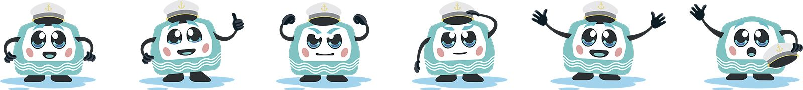

PR-кейс · Парк «Фили» × Дептранс Москвы
Речкин
Речкин
и парк «Фили»
ПКиО «Фили» · Московский транспорт
ПКиО «Фили» · Московский транспорт
У Дептранса Москвы есть детский маскот Речкин — персонаж проекта «Московский транспорт. Детям», связанный с речным транспортом. Для парка «Фили» он выгялдел идеально: речной маршрут приходил к причалу «Парк Фили», а значит, у парка появлялся естественный повод встроиться в городскую транспортную повестку.
Сильная сторона кейса была в полной автономности и инициативе. Задача формально звучала проще: нужно было анонсировать мероприятие парка без бюджета и найти способ попасть в крупные городские каналы. Решение я предложила сама.

Нужно было усилить анонс мероприятия парка и получить дополнительный охват без платного продвижения. Обычный пост от площадки эту задачу не решал. Требовался понятный инфоповод, который был бы интересен не только аудитории парка, но и городским каналам с большой аудиторией.
Я предложила попробовать связаться с Дептрансом и получить их маскота. Логика была простой: если речной транспорт приходит к парку, значит, у маскота Дептранса есть органичное право появиться именно здесь.Так парк получал активность для детей, контакт с Дептрансом и новый канал взаимодействия.
Договоренность строилась на обмене ценностью. Парк давал живую площадку, событие и локальный контекст. Дептранс — маскота, включение в свою коммуникацию и выход в телеграм-каналы с крупной городской аудиторией. Так из локального анонса получился полноценный PR-ход за нулевой бюджет.
В основе кейса лежала связка: парк стоит у воды, к нему приходит речной транспорт, а у Дептранса уже есть готовый персонаж, который связан именно с этой темой. За счет этого идея выглядела как естественное расширение городской среды.
Дополнительный эффект дало то, что партнерство было выгодно обеим сторонам. Парк получал охват и усиление анонса. Дептранс — живую офлайн-площадку для своего маскота и дополнительный сюжет для собственных каналов. Именно поэтому история сработала быстро и качественно.
Вместо обычного анонса парк получил выход в городскую медиасистему через Дептранс. Материалы о событии вышли в Telegram-канале Дептранса и мэра Москвы с аудиторией свыше 500 тыс. подписчиков, а само партнерство стало примером того, как за 0 рублей можно превратить транспортную инфраструктуру рядом с площадкой в рабочий PR-инструмент.
Отдельная ценность кейса заключалась в том, что появился прецедент. Была выстроена практическая схема взаимодействия, в которой маскот мог участвовать в дальнейших мероприятиях парка, а совместные поводы можно было масштабировать и на другие форматы.